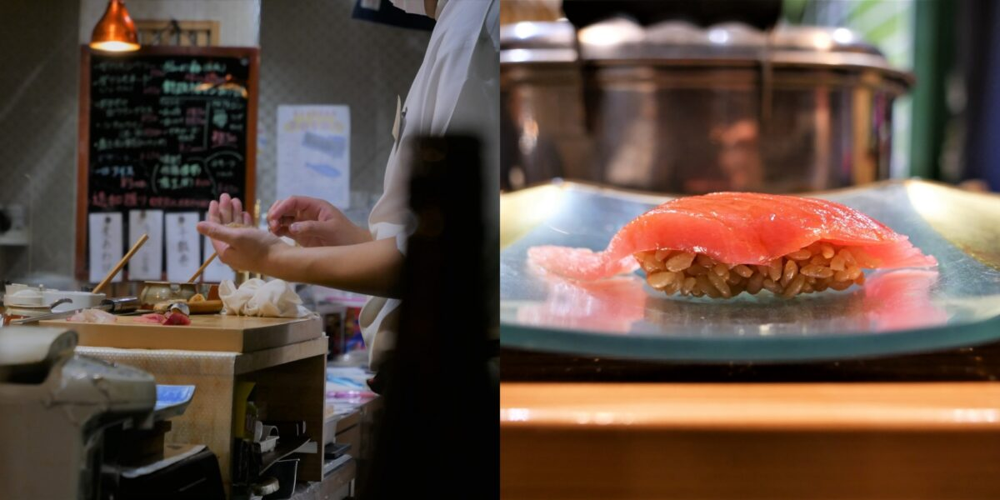

Hanaizumi
ฮานะอิซูมิ (Hanaizumi) เป็นร้านซูชิสไตล์โอมากาเสะที่มีทางเข้าสุดลึกลับ โดยมีเชฟซูชิเป็นผู้กำหนดว่ามื้ออาหารนั้นจะประกอบด้วยอะไรบ้าง เสิร์ฟ 20 จานในราคา 4,200 เยน หลังจากที่คุณเข้าไปในฮานะอิซูมิแล้ว สิ่งที่คุณต้องทำมีเพียงตัดสินใจว่าจะดื่มอะไร (ค่าบริการขั้นต่ำคือเครื่องดื่ม 2 แก้ว ค่าธรรมเนียมแยกต่างหาก) แน่นอนว่าพ่อครัวซูชิจะถามก่อนว่าคุณมีอาการแพ้อาหารใดหรือไม่อยากรับประทานส่วนผสมใด ๆ หรือไม่
เจ้าของและเชฟซูชิ คุณอัตสึฮิโกะ ซูกาวาระ ขนขวายที่จะใช้วัตถุดิบในท้องถิ่นสำหรับอาหารของเขา และซูชิของเขานําเสนอสาระสําคัญของ "เอโดมาเอะ" ซึ่งเป็นซูชิที่ได้รับการจัดเตรียมมาเป็นอย่างดีและปรุงรสมาเรียบร้อยแล้วก่อนนําเสนอให้แก่ลูกค้า ทำให้ไม่มีความจำเป็นจะต้องต้องใส่ซอสถั่วเหลืองเพิ่มเติมแต่อย่างใด ซูชิประเภทนี้เปรียบเสมือนเพลงที่ได้รับการเรียบเรียงไว้อย่างไพเราะ ทำให้รสชาติที่ระเบิดออกมาในปากทั้งกลมกล่อมและน่าตื่นเต้น ช่วยให้คุณได้ลิ้มรสความอัจฉริยะของคุณซูกาวาระ อย่าปล่อยให้ปุ่มรับรสชาติของคุณอยู่เปล่า ๆ ในช่วงเวลารอระหว่างซูชิแต่ละชิ้น สาเกท้องถิ่นที่ร้านอาหารจัดเตรียมไว้ได้รับการคัดสรรมาอย่างพิถีพิถันให้มีคุณภาพสูงสุด การจิบเพียงครั้งเดียวจะทำให้คุณประทับใจในความเข้ากันได้เป็นอย่างดีระหว่างซูชิกับสาเก
แม้ฮานะอิซูมิจะตั้งอยู่ในพื้นที่เงียบสงบ ก็ยังมีลูกค้าเข้ามาใช้บริการเป็นจํานวนมาก เนื่องจากร้านอาหารนี้มีที่นั่งจำนวนไม่มาก จึงขอแนะนําให้ทําการจองมาก่อนเพื่อไม่ให้มาเสียเที่ยว

Menu Gallery


.png)